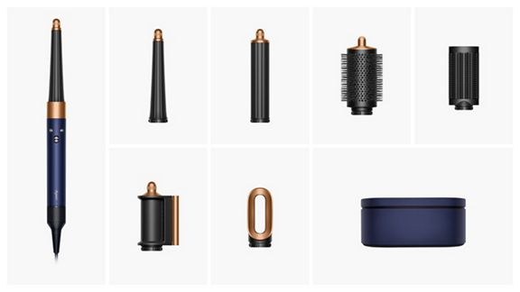
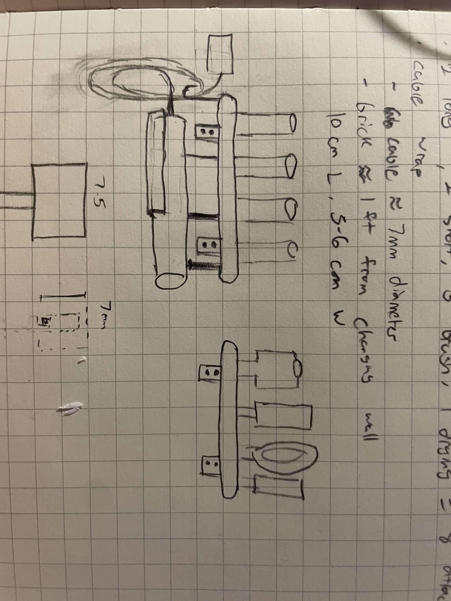
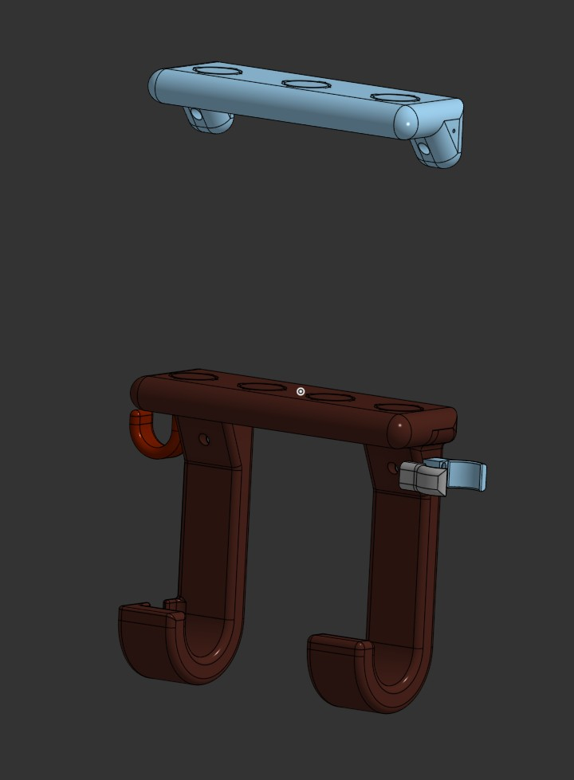
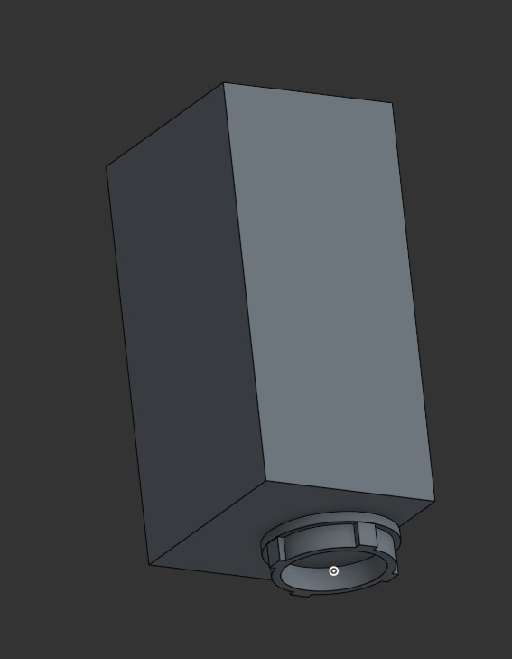
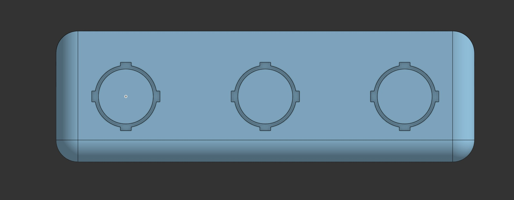
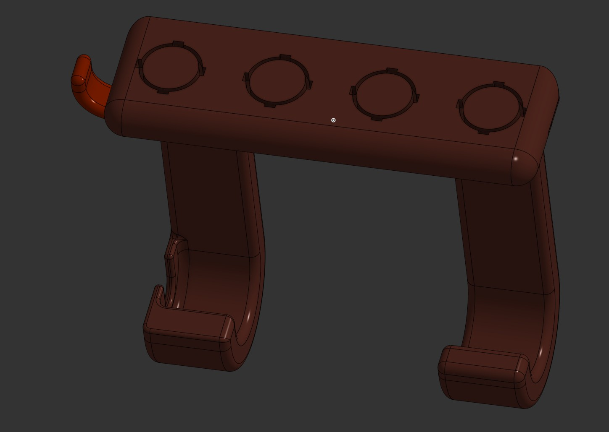
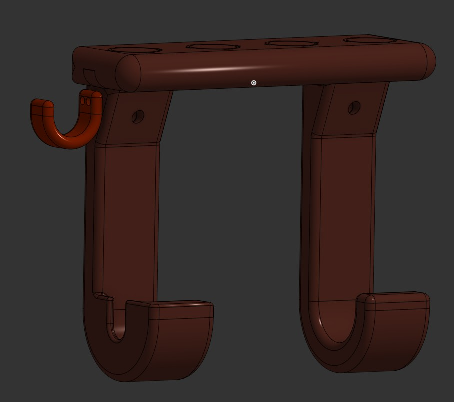
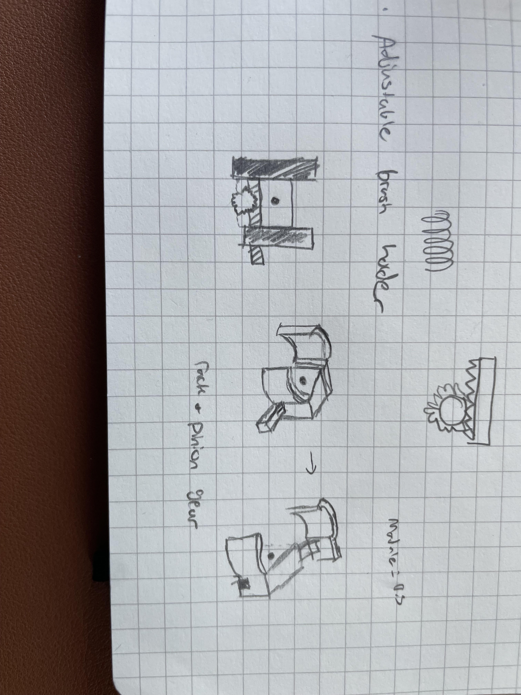
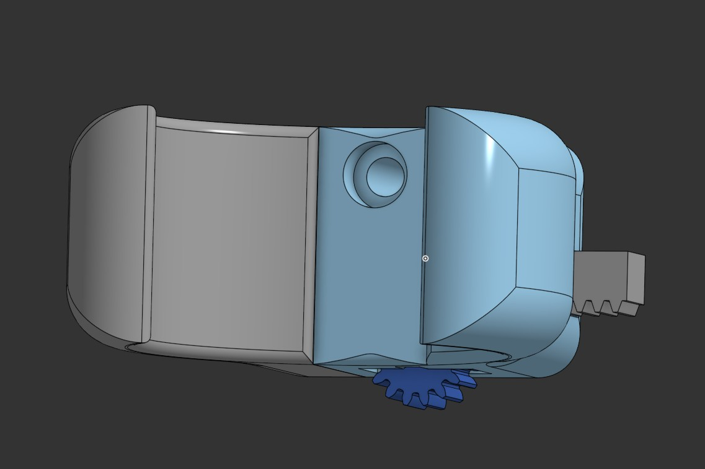

Dyson AirWrap Holder
Wow, that is a lot of attachments
Background
For our second Christmas together, I bought my now fiance a Dyson Airwrap. This was in 2021, meaning it was as hard to get one as it was to buy a PS5 or a GPU (and for basically the same price). I actually had 2 separate bots running to tell me when the next Airwrap or PS5 drop was. It took awhile but I was able to get the covetted tool after about a month (dyson had released a special edition one for the holiday season). The PS5 came a couple months later, but my greatest joy was still seeing my then girlfriends face when she opened the airwrap up.
My wonderful partner still uses the Airwrap every day and her only complaint is that the box that holds the attachments is so big and clunky. She currently lives in New York for her residency program, so she is especially strapped for space. So, I decided to make her a holder for her attachments so that she could keep the airwrap and all its tools in her bathroom.
Requirements

The airwrap comes with the handle, a box, a hair drying attachment, and about 7 styling attachments. The attachments slot into the handle and twist to lock into place.
So, after talking with my fiance, she told me that this holder needed to:
- Be able to hold the airwrap and all its attachments
- Hold the long cable of the airwrap
- Be mountable onto the wall and fit into the space
- Hold a hairbrush she likes to use while drying
- Go with the aesthetic of her bathroom
The Idea
This is the mockup that I came up with:

There are two shelves that can either be side by side or on top of each other. There is a large hook on the bottom to hang the airwrap and a smaller hook on the side to hang the cable. There is also a small adjustable brush holder that can widen to fit all sizes of hairbrushes. I also want everything rounded to match the style of the airwrap.
The Design
I used Onshape to design this holder. I have been using it professionally for awhile now and I love how easy it is to create designs without needing to edit in context and how it is all online. I think my computer is pretty good, but solidworks eats up RAM like Joey Chesnut at a hot dog eating contest. Plus, Onshape is free and isn't annoying to use like Solidworks for Makers.
I also decided to use Bambu's new PLA wood filament for the holder as my fiance has a wood aesthetic in her bathroom. It is also a fun reason to check out some new types of plastic.

Designing the Airwrap Holder
I started out by borrowing my partners widest attachment during my last visit so that I could measure the attachment points and make an approximation for each attachment and attachment point. This would be used to figure out the spacing for each attachment.

It turns out that the widest airwrap attachments are very wide. So wide that putting 4 of the wider attachments side by side would mean that I would need to split the shelf in half and combine them. I didn't like this idea because I wanted to make it seamless and 1 part. I also had to put the wider attachments together because, the other 4 are the curlers and they look better as a set. Then it hit me, just keep 1 attachment on the handle, my fiance usually uses the airwrap to dry her hair so the hair dryer attachment is always on it. If she needs to use a different head, she can swap the hair dryer attachment for the other attachment.

I measured the attachment points and cut out the slots into the shelves so that the attachments can fit into the slots easily but not too snuggly (I used a 0.3mm offset to allow for a loose fit).

I then started working on the airwrap holder. I put 4 cutouts on top of this one to fit the curling tools. I also added the hooks to hold the handle but also added a slot for the cable that is on the bottom of the handle to go through. This is to add a little strain relief to the airwrap so that in case the cable gets pulled, the airwrap doesn't get pulled out of the holder and fall.

Then I added the mounting holes to both of the shelves. I added countersunk holes for a #8-32 x 1.75in screw. This is a commonly used screw for mounting onto walls and should be easily able to hold the airwrap and its attachments. I also bought drywall anchors in case we couldn't find a studs to mount the holder on.
I also added M3 holes onto the sides of each of the shelves to mount various attachments to the holder. One set of M3 holes is meant for the cable hook. The hook is spaced such that the user should be able to wrap the cable a couple of times.
Designing the Brush Holder

This was the most fun part of the project. I wanted the brush holder to fit multiple types of brushes, and these brushes have different handle sizes. So, I thought, why not make it adjustable?

I started out by making a sort of claw to hold the brush. I then designed a rack and pinion system to allow for the claw to open up to fit a larger brush. Luckily onshape has FeatureScripts for making spur gears but I did have to read up on designing the rack portion of the system. The gear has a small dowel pin pressed into it and the dowel pin is then pressed into slots cut into the bottom of the claw. This allows for the gear to be engaged with the rack and simply turning the rack with your finger will open up the claw. The claw can fit handles ranging from 30-50mm wide.
The claw attaches to any of the M3 mounting holes on the shelves.